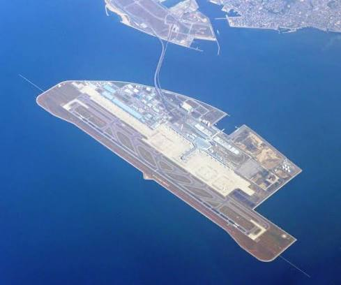
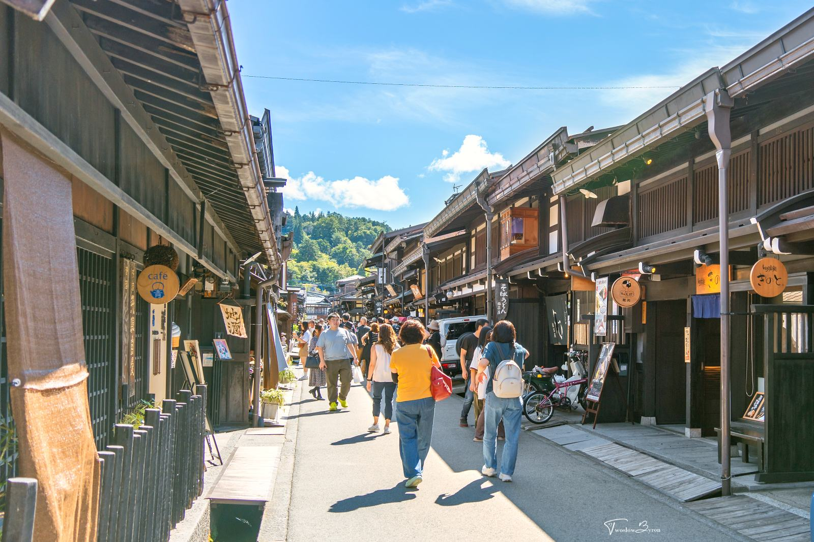
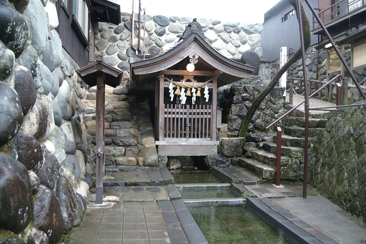
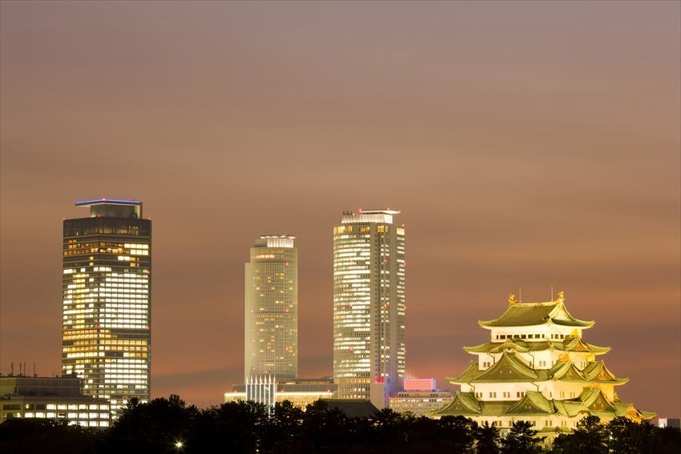

Travel Guide · Chubu & Hokuriku
樂樂組-日本中部北陸五日旅行行程
這一版完全依你提供的完整行程、住宿與回程安排製作。每一天都保留路徑、附近商店與 Google 地圖連結，並用可視化路線條幫你快速看懂整天怎麼走。
航班資訊
去程：虎航 IT206，2026/08/25(二) 09:00 台灣桃園國際機場 T1 出發，12:55 抵達名古屋機場 T2。
回程：虎航 IT207，2026/08/29(六) 13:45 名古屋機場 T2 出發，15:55 抵達台灣桃園國際機場 T1。
巴士移動總覽
Day 1：中部空港 → 高山約 220 km，約 4.5 至 5.5 小時。
Day 2：高山 → 白川鄉約 50 km，約 50 至 70 分鐘；白川鄉 → 金澤約 105 km，約 2 至 2.5 小時。
Day 3：金澤 → 郡上八幡約 125 km，約 2.5 至 3.5 小時；郡上八幡 → 犬山約 70 km，約 1.5 至 2 小時；犬山 → 名古屋榮約 35 km，約 45 至 70 分鐘。
Day 4：名古屋榮飯店 → 名古屋中央塔樓 / 榮町 / 大須多為 1.5 至 2 km，約 8 至 15 分鐘。
Day 5：飯店 → 大須觀音約 1.5 km，約 8 至 12 分鐘；大須觀音 → 中部國際空港約 35 至 45 km，約 45 至 70 分鐘。
5 天完全照你的行程走，景點與住宿都已固定。
路徑可視化每一天都有順序路線條，快速掌握動線。
附近店家把百貨、玩具店、模型店整理在同一天。
可直接部署純靜態 HTML，可上 Vercel。
行程導覽
順著看，就能快速知道每天去哪裡、住哪裡、順路逛什麼店
Day 1
桃園機場 → 名古屋中部空港 → 飛驒高山 → KOKO HOTEL 飛驒高山
這天以入境與移動為主，下午到高山老街散策，晚上直接入住你指定的第一晚飯店。
桃園機場日本名古屋中部空港飛驒高山小京都KOKO HOTEL 飛驒高山

中部國際機場旅程起點本機圖片

高山老街上三之町街景本機圖片

高山風味老街與古町並氛圍本機圖片
名古屋中部空港
入境名古屋
中部地區的重要空中門戶，銜接後續行程。
飛驒高山上三之町
古街小京都
古町並、扇子店、味噌店、漬物店與清酒舖是主要看點。
KOKO HOTEL 飛驒高山
住宿第一晚
你指定的第一晚住宿，保留為高山落腳點。
附近店家：高山老街本身就是逛街區，建議留意扇子店、香氛店、味噌店、漬物店與清酒舖。
Day 2
高山 → 白川鄉合掌村 → 兼六園 → 金澤城跡 → 東茶屋街 → 金澤T-MARK飯店
這天是北陸經典文化日，上午白川鄉，下午金澤庭園與茶屋街，晚上直接入住你指定的第二晚飯店。
KOKO HOTEL 飛驒高山白川鄉合掌村兼六園金澤城跡東茶屋街金澤T-MARK飯店
白川鄉合掌村
世界遺產合掌屋
合掌型茅草屋頂是最大特色，像童話村落。
金澤兼六園
日本三大名園四季皆美
池泉、松樹、步道與雪吊構成最經典的金澤畫面。
金澤城跡
歷史遺構城下町
與兼六園可串成完整文化路線。
東茶屋街
茶屋街金箔 / 咖啡
最適合傍晚散步、買金箔商品與甜點。
金澤T-MARK飯店
住宿第二晚
你指定的第二晚住宿，金澤站周邊動線最順。
金澤站周邊商店
附近店家百貨 / 模型
順路可看 `金澤FORUS`、`animate 金澤`、`3COINS 金沢`、`THE GUNDAM BASE SATELLITE KANAZAWA`。若以步行為主，這些都比郊區店更實用。
Day 3
金澤 → 郡上八幡 → 犬山城 → 三光稻荷神社 → 免稅店 → AEON → TRAVELODGE 名古屋榮
這天把郡上八幡、水之小鎮、國寶名城和名古屋晚間購物串成一條線，晚上入住你指定的第三晚飯店。
金澤T-MARK飯店郡上八幡宗祇水犬山城三光稻荷神社免稅店AEON 購物中心TRAVELODGE 名古屋榮
郡上八幡
小京都城下町
町屋與水流共存，保留純粹生活感。
宗祇水
名水百選清澈湧水
郡上八幡最具代表性的天然湧泉。
犬山城
國寶最古老天守之一
日本目前現存木造天守裡最古老的一座之一。
三光稻荷神社
千鳥居戀愛 / 財運
朱紅鳥居與愛心元素很適合拍照。
AEON 購物中心
大型商場伴手禮補貨
買伴手禮、吃晚餐、補貨都很方便。
TRAVELODGE HOTEL 名古屋榮
住宿第三晚
你指定的第三晚住宿，也作為第四晚住宿。
附近商店
名古屋站 / 榮町百貨 / 玩具
這天若晚到市區，可先記 `名古屋PARCO`、`駿河屋 名站前`、`3COINS OOOPS!`、`Joshin Kids Land 大須店`。
Day 4
TRAVELODGE 名古屋榮 → 全日自由活動 → TRAVELODGE 名古屋榮
這天就是你的名古屋自由日，最適合把榮町、名古屋站與大須商店街一次走完，順便把二次元、模型和百貨一次補齊。
TRAVELODGE 名古屋榮名古屋中央塔樓名古屋站地下街榮町商圈大須商店街TRAVELODGE 名古屋榮

名古屋中央塔樓車站上方地標
名古屋中央塔樓
地標商場名古屋站
適合一站式午餐與購物起點。
榮町商圈
百貨集中地下街
百貨、書店、雜貨、餐廳都很密集。
名古屋PARCO
榮町潮流 / 動漫
很適合和榮町商圈一起逛。
animate 金山
安利美特金山
二次元商店最順手的一站。
駿河屋 名古屋大須本館
中古周邊大須
模型、玩具、角色商品都能找。
Joshin Kids Land 大須店
RC / 玩具大須
你提供的 RC 地標，最適合塞進第 4 天。
3COINS OOOPS! ゲートウォーク名古屋店
名古屋站3COINS
名古屋站地下街的日常補貨點。
THE GUNDAM BASE SATELLITE NAGOYA
鋼彈模型AEON 旁
鋼彈模型官方據點，建議排進自由日。
TRAVELODGE HOTEL 名古屋榮
住宿第四晚
你指定的第四晚住宿，與第三晚相同。
Bic Camera 名古屋JR Gate Tower
最近的Bic名古屋站
名古屋站直結，這是你這趟行程裡最順的 Bic Camera，適合和車站地下街一起排。
Yodobashi Camera Sun Shine Sakae
最近的Yodobashi榮町
就在榮町商圈內，和 TRAVELODGE 名古屋榮最接近，步行最合理。
Don Quijote Sakae Sanchome Store
最近的唐吉訶德榮町
如果你住在 TRAVELODGE 名古屋榮，這間就是最近、最好走的唐吉訶德分店。
我的推薦：如果你只想選一條自由日路線，直接用「名古屋中央塔樓 → 榮町商圈 → 大須商店街」最順。
Day 5
TRAVELODGE 名古屋榮 → 大須觀音 → 中部空港 → 桃園
最後一天是回程日，先用大須觀音作名古屋收尾，再前往機場返台。
TRAVELODGE 名古屋榮大須觀音名古屋中部空港桃園機場

大須觀音名古屋文化收尾
大須觀音
日本三大觀音名古屋地標
名古屋大須的代表地標，適合回程前簡單散步。
中部國際空港
回程名古屋
從名古屋返回台北，結束五日旅程。
TRAVELODGE HOTEL 名古屋榮
住宿已退房
第四晚同住的飯店，回程前先整理行李。
YouTube
2026 影片參考 - 依每天分組
這裡整理成 Day 1 到 Day 5 對應的 YouTube 搜尋連結，方便你直接看今年的旅行影片與實拍經驗。